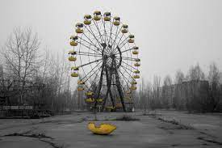
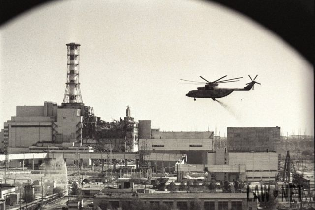
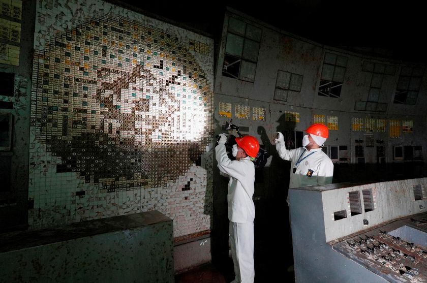

El accidente de Chernóbil1 fue un accidente nuclear sucedido el 26 de abril de 1986 en la central nuclear Vladímir Ilich Lenin, ubicada en el norte de Ucrania, que en ese momento pertenecía a la Unión Soviética, a 3 km de la ciudad de Prípiat, a 18 km de la ciudad de Chernóbil y a 17 km de la frontera con Bielorrusia. Es considerado el peor accidente nuclear de la historia, y junto con el accidente nuclear de Fukushima I en Japón en 2011, como el más grave en la Escala Internacional de Accidentes Nucleares (accidente mayor, nivel 7). Asimismo, suele ser incluido entre los grandes desastres medioambientales de la historia.
El accidente comenzó durante una prueba de seguridad en un RBMK. La prueba fue una simulación de un corte de energía eléctrica para ayudar a crear un procedimiento de seguridad para mantener la circulación del agua de enfriamiento del reactor hasta que los generadores eléctricos de respaldo pudieran proporcionar energía. Se han realizado tres de esas pruebas desde 1982, pero no han proporcionado una solución
| Zona Turistica | Reactor 4 | sala de Mando |
|---|---|---|
|  |  |  |